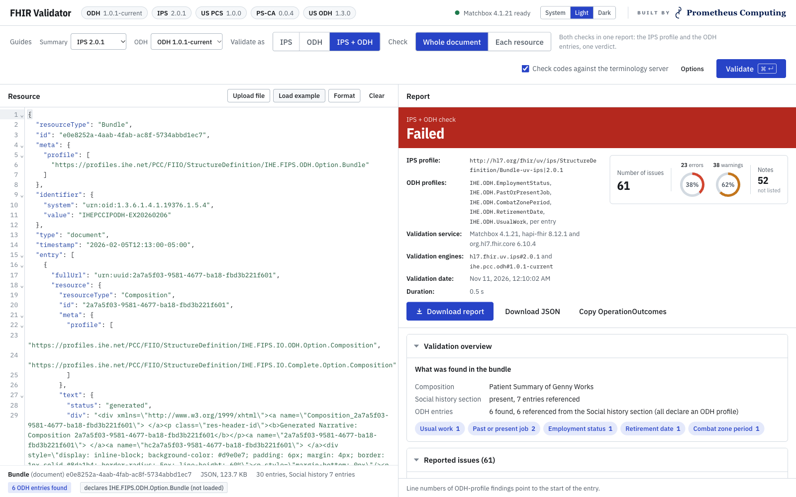
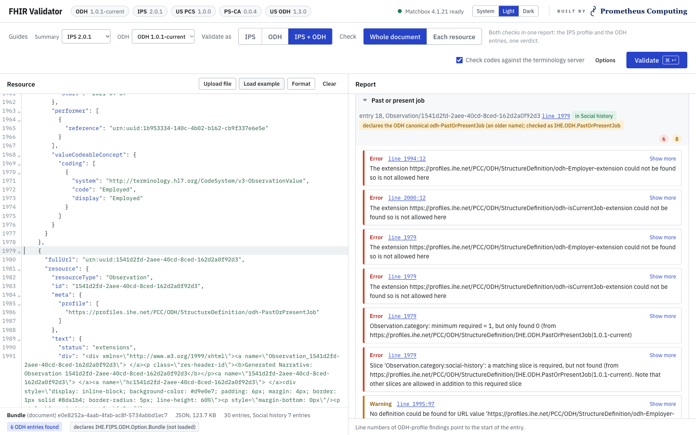
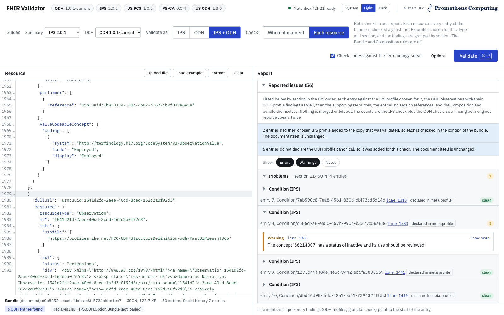
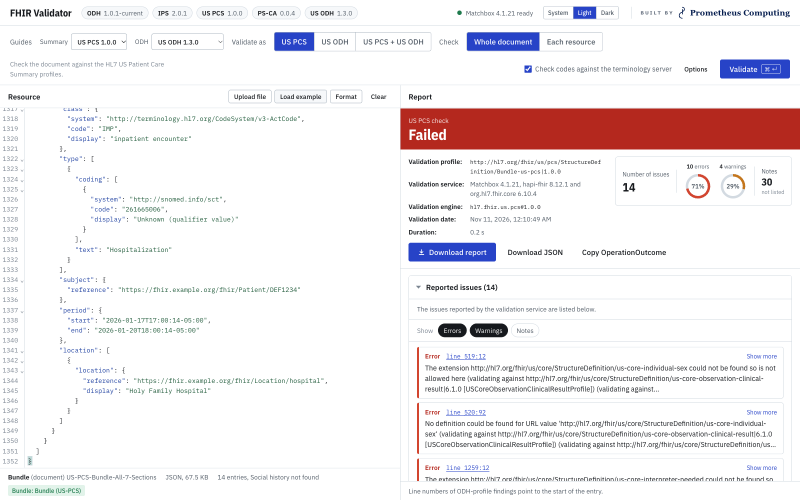
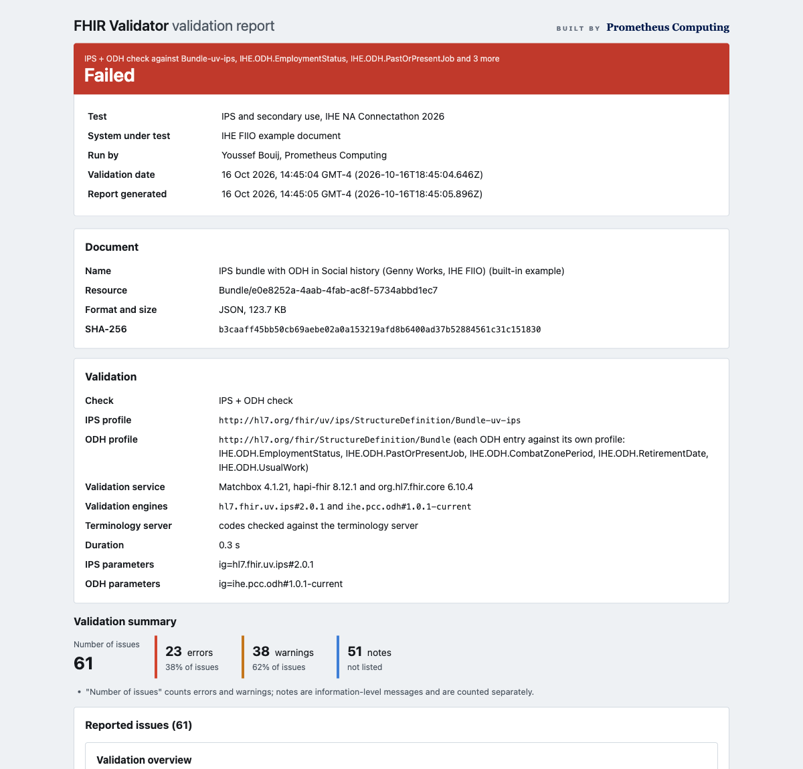

Guest article by Youssef Bouij, Prometheus Computing
In October 2026 our team took part in the IHE North America Connectathon, on the "IPS and secondary use" track. The track tests International Patient Summary documents that carry Occupational Data for Health (ODH) observations in their Social history section: a patient's usual work, past or present jobs, employment status, retirement date and combat zone periods.
Testers on the track had a practical problem. An IPS document with ODH inside has to satisfy two implementation guides at once, and the two guides are published by different organisations on different schedules. Checking a document meant running it against IPS, then pulling out each occupational observation and checking it against the right ODH profile, then putting the two answers together by hand.
We built a small web validator during the week to do that in one click. Matchbox does all of the validation. This article describes what we built on top of it and what made Matchbox a good base for it.
What the tool does
You paste or upload a FHIR document, pick the guides, and press Validate. The tool gives one report with one verdict.

The combined IPS and ODH check on the IHE FIIO example document. One verdict, the profiles and engines used, and what was found in the bundle.
Behind that one click there are two Matchbox calls:
- The whole document is validated against the IPS Bundle profile, in the engine that has IPS 2.0.1 loaded.
- The tool finds the Composition and its Social history section, recognises the ODH observations by their LOINC codes or declared profiles, and has each one validated against its own ODH profile, in the engine that has the ODH guide loaded.
The report adds the two results together and lists the findings by their place in the document. Each ODH observation gets its own group, with a link to the line in the editor where the entry starts.

Findings for one Past or present job observation. Clicking a line number jumps to that entry in the document.
Checking each resource on its own
Midway through the week the track lead asked for a second way of looking at a document: every entry checked against the profile the guide intends for it, whether or not the entry declares that profile.
For this the tool reads the guide's Composition profile to learn which profile each section expects, and chooses a profile for every entry: by the section that references it, by its code or category where a section allows several profiles, and for supporting resources (a Medication, a Device, the Patient) by the entry that points at them. It adds those profiles to a copy of the bundle and sends the copy to Matchbox once. Because the entries travel together, references between them still resolve. The findings come back grouped by section.

Each entry checked against the profile chosen for it, grouped by section in the order of the guide. The original document is never changed.
Several guides, one server
This is where Matchbox helped us most. A single Matchbox server held every guide the track needed: the International Patient Summary, the IHE ODH guide, and later the US and Canadian patient summaries and the US ODH guide. The ODH guide was still changing during the week, and Matchbox could load it straight from its latest build.
Matchbox keeps each guide in its own validation engine, and every check names the guide it should use. So a tester always knows exactly which guide and version their document was judged against, even when two versions of a guide sit on the same server.
When the track asked mid-week for the US and Canadian guides, adding them to Matchbox took a few minutes. Most of our time went into the user interface, where the tester picks a patient summary guide and an ODH guide, and every button and report is named after that choice.

The same tool switched to HL7 US Patient Care Summary and US ODH.
Reports testers can hand over
Connectathon testers need something to attach to a test record. Every check can be downloaded as a single HTML file, laid out like the Gazelle validation report that participants already know. It names the document and its SHA-256, the profiles, the engines and their versions, whether codes were checked against the terminology server, and who ran it. The same content is available as JSON, with the OperationOutcomes inside.

The downloaded report. One self-contained file with no scripts.
What worked well
- Speed. A full IPS bundle with six ODH observations validates in about half a second on a laptop, both engines included. People could fix a document and check it again without waiting.
- Packaging. The official Docker image, one YAML file and a volume for the downloaded packages were all we needed. We could give the track lead a zip that runs with
docker compose upand nothing else installed. - Continuous builds. Loading a package by URL let us test against a guide that was still changing during the week.
- The same engine as the official portal. The Gazelle validation portal at the Connectathon is also backed by Matchbox, so a result in our tool and a result in the portal came from the same engine.
- Locking it down. With
httpReadOnly: truethe server still validates, but nobody on the event network can install or remove packages.
What we learned
- Plan memory for the number of engines. Seven engines use about 4 GB, and we give the container 7 GB.
- When more than one version of a guide is loaded, always pass
ig. A profile URL alone is not enough to say which version you mean. - An empty
"meta": {}is rejected, so when the tool removes a declared profile from its working copy it removes the whole element. - Bundle link findings report entry positions counting from 1, while the other findings count from 0. We handle both when we map a finding back to a line in the editor.
- Published examples are good test inputs, and some of them do not pass their own guide. That is worth knowing before a tester assumes the mistake is theirs.
Thank you
At Prometheus Computing we build standards and interoperability testing tools for immunization, lab reporting, syndromic surveillance and CDA. FHIR validation was newer ground for us, and Matchbox let a small team deliver something useful within the week of the event. Thank you to Oliver Egger and the ahdis team for building it and keeping it open, and to Matt Blackmon of The Sequoia Project, who pointed us to the right version and saved us a good deal of time.